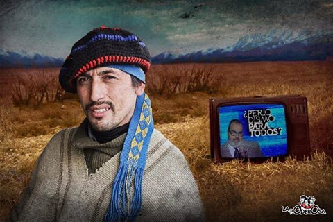

Real Chubut - Agencia de Noticias


Facundo Jones Huala: "YO LO DESAFÍO, A ENTREVISTARME EN VIVO"

Ojalá viniera, me gustaría. De verdad, me gustaría verlo recorrer las tierras que nosotros habitamos, para que conozca cómo vivimos. Pero no le interesa saberlo. Y mucho menos le interesa que otros lo sepan. Por eso, mandó a editar burda y cobardemente toda la entrevista que me hicieron en Periodismo Para Todos, tergiversando conceptos, instalando falacias, faltando a la verdad. Pero así como la historia ha sido capaz de absolver a Fidel, esa misma historia se encargará de juzgarlo a usted.
No somos estúpidos los pueblos.
Y ya no les resulta tan fácil engañarnos.
Hoy, millones y millones de hermanos nos damos cuenta de como nos mienten sistemáticamente, pero tantos años de lucha nos han servido para comprender que todo, absolutamente todo lo que uno siembra, tarde o temprano se cosecha. Usted mintió, Lanata, mintió mucho... Y no por desinformado, mintió por garca, por lo mismo que abandonó su propia identidad, cuando decidió borrar al fundador de Página 12, para incubar a este pichón de Clarín.
Hoy, las cárceles reflejan las miserias de nuestra sociedad y los peligros permanentes de las trampas que nos venden a los pobres, cuando nos invitan a sentir vergüenza por ser obreros, motivándonos para llegar a ser como el patrón de papá. Y si no, miren los camioncitos de Gendarmería que mandaron a las villas para el Día del Niño, para machacar sobre nuestras mentes desde pequeños. Pues frente a semejantes provocaciones, no podemos sentir más que angustia por toda esa gente inocente que consume su basura periodística, sin desconocer que aún tenemos una ventaja: nosotros lo conocemos a usted, mucho más de lo que usted nos conoce.
Desde la Campaña del Desierto, nos vienen escondiendo y promoviendo como mano de obra barata, para que seamos sus peones eternamente. Presa de su propia soberbia, gente como usted creyó derrotarnos una y mil veces, olvidando la lucha heroica del pueblo mapuche, que sigue acá, donde nació, donde vivió, donde creció. Somos nosotros y somos de verdad. Usted, Lanata, sólo es una propaganda, ni buena, ni mala, ¡sólo propaganda! Humo, que finalmente se evapora, como sus teorías y sus cacerías televisadas.
¿O nadie se detuvo en el "arsenal" que nos encontraron? Serruchos, martillos, herramientas de trabajo, porque sí, ¡le tienen miedo a la pala! No buscaban datos, ni pruebas, ni explicaciones, buscaban mugre. Para eso mandaron a Otero, su mulo, que vino a entrevistarme acá, en la cárcel. Me tuvo hablando durante una hora entera, para poder llevarse los 30 segundos lavados de contenido que recortaron a su antojo...
Porque tienen miedo de pasar la entrevista completa, sin editar.
Tienen miedo de difundir las respuestas que no pueden dar.
No por casualidad, han gozado aquí de curiosos privilegios. Fíjense que para escribir estas líneas, debimos pedirles a los compañeros de La Garganta que se registraran como amigos, puesto que las solicitudes de prensa para ingresar al penal siguen siendo obturadas. Y sin embargo, la Dirección Nacional del Servicio Penitenciario no tuvo ningún requerimiento para sus siervos. Es más, cuando le notifiqué a Otero los pasos formales que debía dar para solicitar el permiso, me respondió que no haría falta, porque tenía "buenos contactos". Y evidentemente los tenía: llegaron y entraron como si fuera su casa.
De aquí, se llevaron mis palabras para cocinar sus verdades, puesto que los mapuches jamás enfrentamos al Estado; estamos demasiado ocupados enfrentando al poder real, a sus transnacionales y a la burguesía que los apoya. Nunca hemos atacado a instituciones y siempre hemos repudiado todo acto de terrorismo. Aun cuando ponen su mayor aparato represivo en favor de los terratenientes, perpetuando el hambre y la pobreza, acá nos defendemos con piedras, porque así lo hemos hecho siempre, reivindicando la autodefensa, sin pensar en la asimetría de fuerzas, apenas demostrándoles y demostrándonos que no estamos dispuestos a quedarnos de brazos cruzados.
Porque así somos:
preferimos la muerte a la esclavitud.
Usted, Lanata, miente a la distancia, miente y corre, porque no se bancaría un debate, una nota en vivo, una batalla ideológica, ¿o sí? Con todo su poder mediático, el verdadero arsenal, intenta crear un fantasma, difundiendo las imágenes de sus ejércitos armados hasta los dientes, para hostigar a pequeños grupos de personas, cuando las únicas víctimas de semejante puesta en escena son sus consumidores. Nosotros seguimos acá, resistiendo sobre nuestros territorios y mirando pasivamente cómo atacan a sus televidentes, disparándoles falsas certezas, como todas las que intentaron dar sobre la Resistencia Ancestral Mapuche. Pues la RAM siempre ha sido una idea por encima de cualquier organización, una idea que pueden atribuirse otros y que jamás avalaría que un peñi pueda cometer un atentado o atropellar personas...
Juntos, todas y todos los seres humanos de bien, ésos que hoy estamos exigiendo la aparición de Santiago Maldonado, debemos decidirnos de una vez a dejar de lado esa cultura chatarra, desarrollando conciencia propia, medios propios, fuerza propia. Hoy más que nunca, debemos debatir, pensarnos y ayudarnos entre todos los oprimidos, territorializando los saberes de los intelectuales e intelectualizando los saberes de los obreros. A eso, los estamos llamando, a descreer del capitalismo y a combatirlo de verdad, por encima de los dogmas y por detrás de las necesidades que arrastran nuestros pueblos.
De usted, Lanata, sólo espero su respuesta a mí propuesta.
Usted ponga el día, la hora y el lugar.
Yo también quiero preguntar.